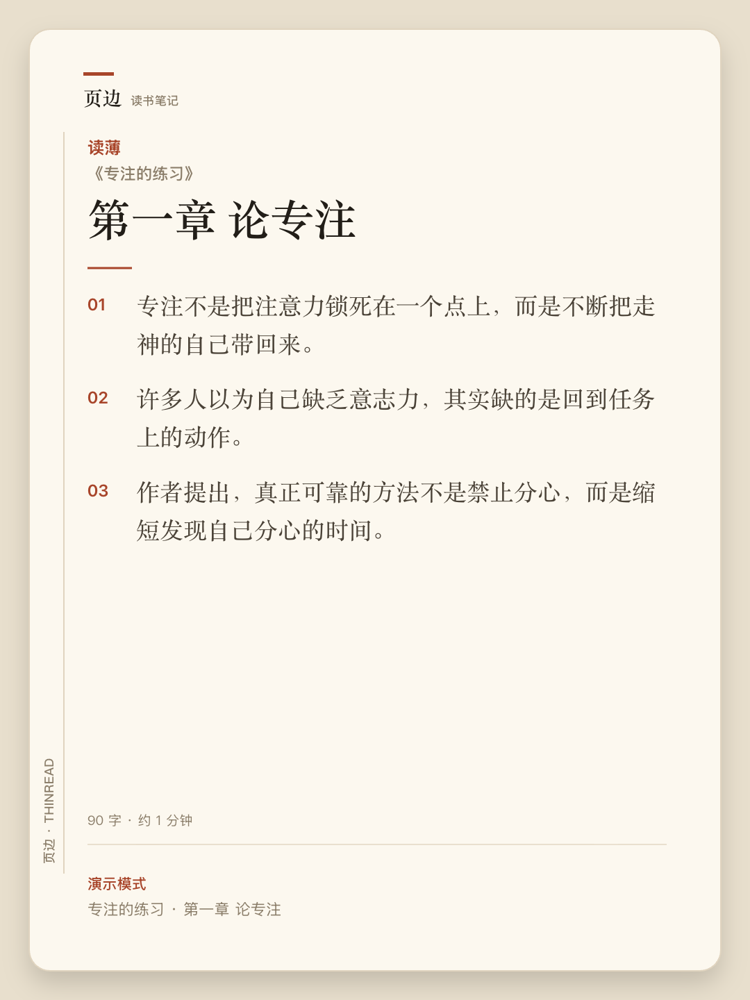

READING FLOW / 03
THINREAD / PRODUCT NOTES
ONE CHAPTER AT A TIME
先读薄，
再谈
记住
。
打开一章，点「读薄并提炼」。原文先变成可发布的读薄稿，再从稿子里提炼卡片。
A
原文
：断言、论证链、边界都留下。
B
读薄
：并列改列表，删重复，不删观点。
C
卡片
：用「不知道它是否影响理解」筛选。

EXPORTED SHARE CARD / 1080×1440